Last updated: 2020-05-19
Checks: 6 1
Knit directory: my_workflowr_project/
This reproducible R Markdown analysis was created with workflowr (version 1.6.2). The Checks tab describes the reproducibility checks that were applied when the results were created. The Past versions tab lists the development history.
The R Markdown is untracked by Git. To know which version of the R Markdown file created these results, you’ll want to first commit it to the Git repo. If you’re still working on the analysis, you can ignore this warning. When you’re finished, you can run wflow_publish to commit the R Markdown file and build the HTML.
Great job! The global environment was empty. Objects defined in the global environment can affect the analysis in your R Markdown file in unknown ways. For reproduciblity it’s best to always run the code in an empty environment.
The command set.seed(20200505) was run prior to running the code in the R Markdown file. Setting a seed ensures that any results that rely on randomness, e.g. subsampling or permutations, are reproducible.
Great job! Recording the operating system, R version, and package versions is critical for reproducibility.
Nice! There were no cached chunks for this analysis, so you can be confident that you successfully produced the results during this run.
Great job! Using relative paths to the files within your workflowr project makes it easier to run your code on other machines.
Great! You are using Git for version control. Tracking code development and connecting the code version to the results is critical for reproducibility.
The results in this page were generated with repository version fb0dff0. See the Past versions tab to see a history of the changes made to the R Markdown and HTML files.
Note that you need to be careful to ensure that all relevant files for the analysis have been committed to Git prior to generating the results (you can use wflow_publish or wflow_git_commit). workflowr only checks the R Markdown file, but you know if there are other scripts or data files that it depends on. Below is the status of the Git repository when the results were generated:
Ignored files:
Ignored: my_workflowr_project/.Rhistory
Ignored: my_workflowr_project/.Rproj.user/
Ignored: my_workflowr_project/data/
Untracked files:
Untracked: my_workflowr_project/analysis/03-regression.Rmd
Untracked: my_workflowr_project/analysis/04-plotting.Rmd
Unstaged changes:
Modified: my_workflowr_project/analysis/_site.yml
Note that any generated files, e.g. HTML, png, CSS, etc., are not included in this status report because it is ok for generated content to have uncommitted changes.
There are no past versions. Publish this analysis with wflow_publish() to start tracking its development.
In todays session, we will go through a number of common plot types and will learn how to generate them using ggplot2 and other packages of the “ggverse”. For simplicity, I will again use the iris dataset and will use this to highlight a couple of different plots.
data(iris)
library(ggplot2)ggplot(data = ) +
Create scatterplot Sepal.Width versus Sepal.Length:
p1 <- ggplot(data = iris) +
geom_point(mapping = aes(x = Sepal.Length, y = Sepal.Width, colour = Species))
p1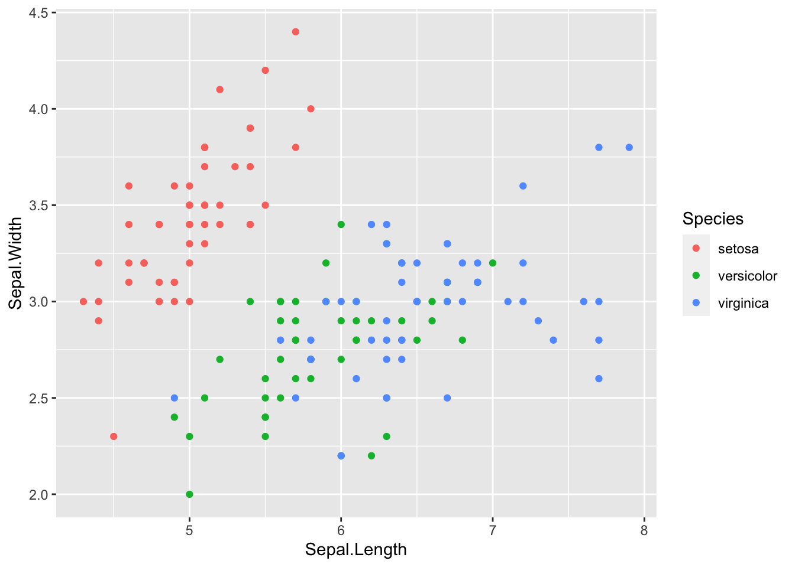
Quickplot qplot
qplot(data = iris, x = Sepal.Width, y = Sepal.Length, colour = Species, geom = "point")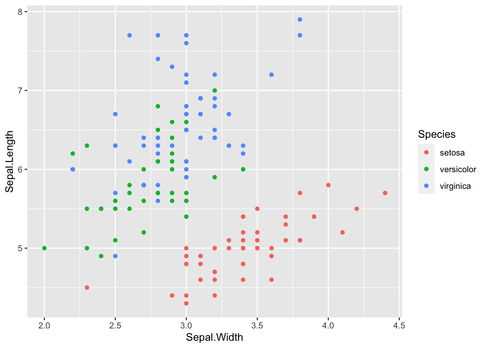
Add a linear regression line per group
p1 <- p1 + geom_smooth(mapping = aes(x = Sepal.Length, y = Sepal.Width, colour = Species),
method = "lm", formula = "y ~ x")
p1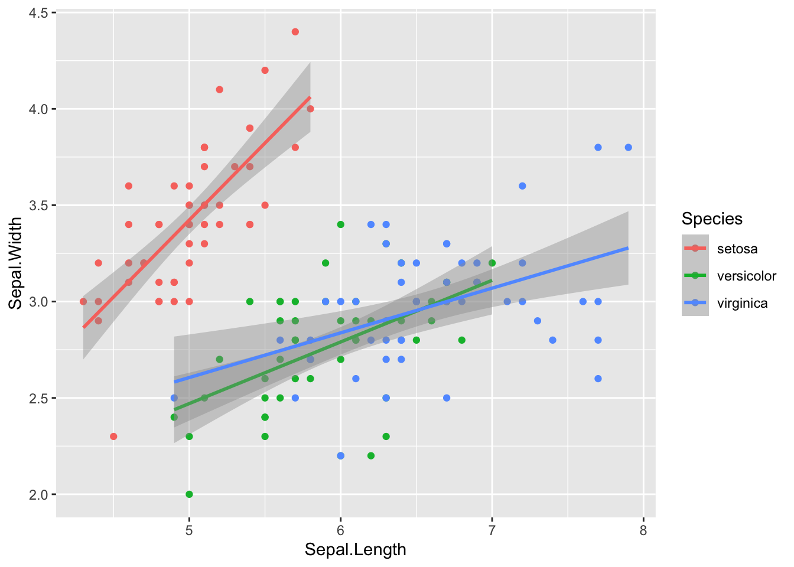
p1 <- p1 + facet_wrap(. ~ Species)
p1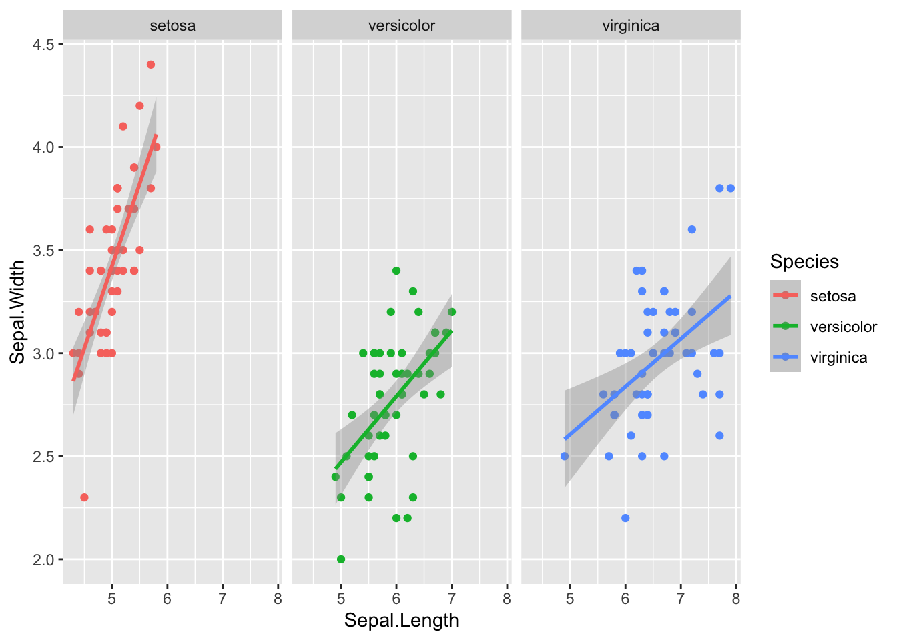
Use the NPG colour scheme
library(ggsci)
p1 <- p1 + scale_colour_npg()
p1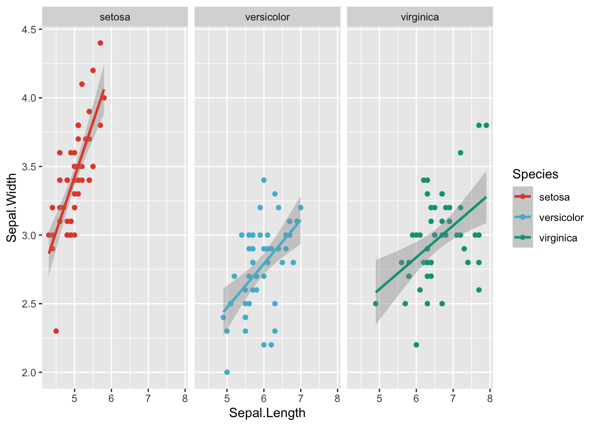
Create a colour vector:
library(RColorBrewer)
display.brewer.all(type = "qual", colorblindFriendly = TRUE)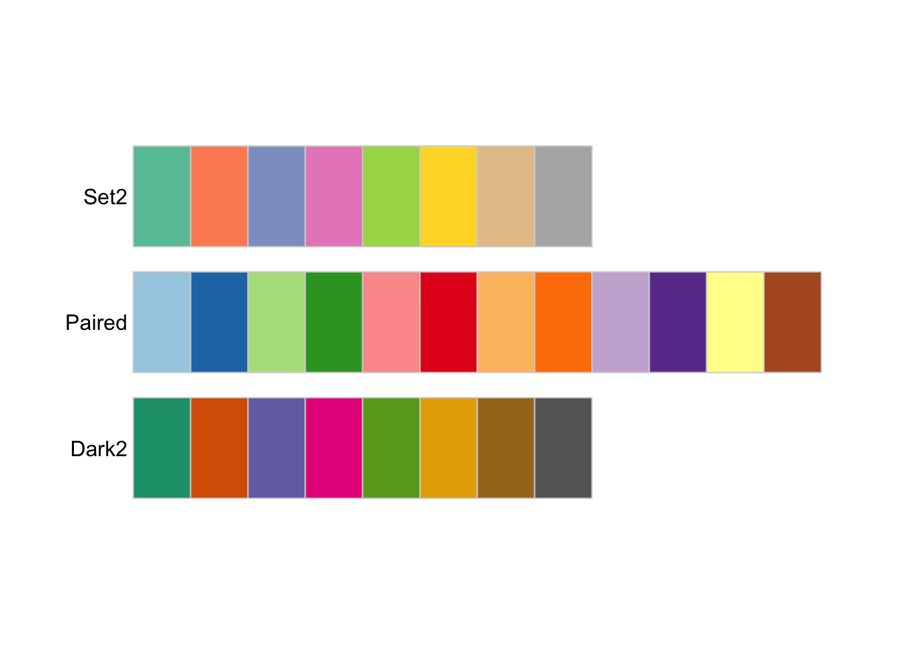
cur_pal <- brewer.pal(n = 3, name = "Set2")
colour_vec <- c(setosa = cur_pal[1],
versicolor = cur_pal[2],
virginica = cur_pal[3])
p1 <- p1 + scale_color_manual(values = colour_vec)Scale for 'colour' is already present. Adding another scale for 'colour',
which will replace the existing scale.p1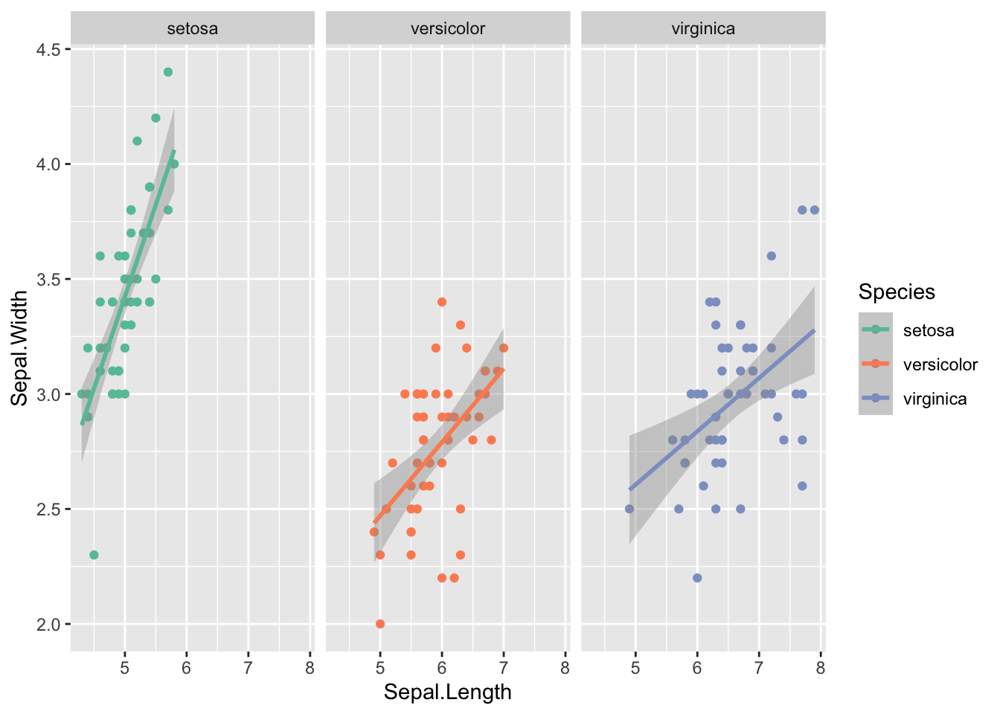
Start from scratch
p1 <- ggplot(data = iris) +
geom_point(mapping = aes(x = Sepal.Length, y = Sepal.Width, fill = Species),
shape = 21, size = 2) +
geom_smooth(mapping = aes(x = Sepal.Length, y = Sepal.Width, colour = Species),
method = "lm", formula = "y ~ x") +
facet_wrap(. ~ Species, labeller = labeller(Species = c("setosa" = "Setosa",
"versicolor" = "Versicolor",
"virginica" = "Virginica"))) +
scale_color_manual(values = colour_vec, name = "Iris species", labels = c("Setosa", "Versicolor", "Virginica")) +
scale_fill_manual(values = colour_vec, name = "Iris species", labels = c("Setosa", "Versicolor", "Virginica")) +
xlab("Sepal Length") + ylab("Sepal Width") +
theme(panel.background = element_blank(),
panel.border = element_rect(fill = NA),
legend.position = c(0.67, 0.8),
legend.background = element_rect(colour = "black"),
axis.text = element_text(colour = "black", size = 9),
axis.title = element_text(size = 12),
strip.background = element_blank(),
strip.text = element_text(colour = "black", size = 12))
p1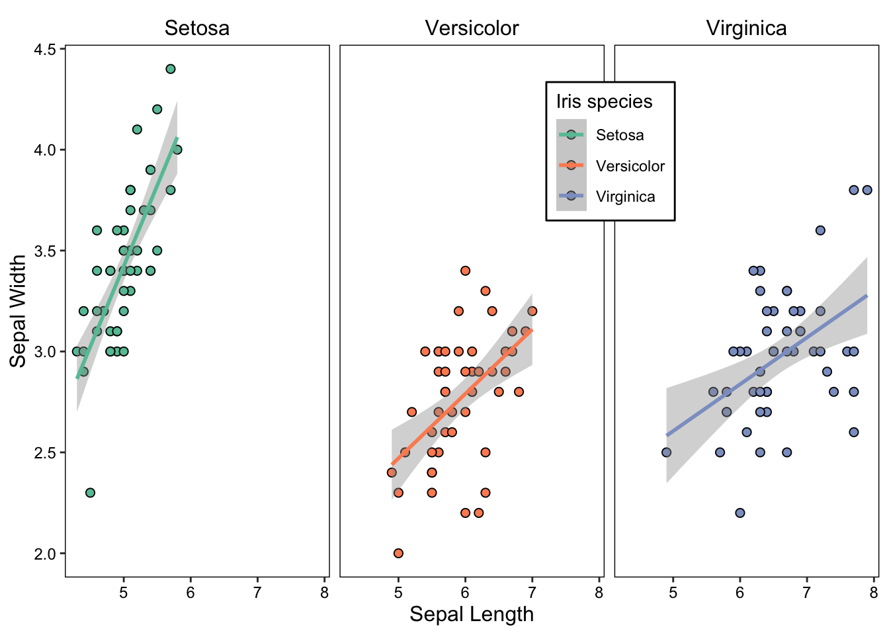
We can use the custom PCA function.
source("code/helper.R")
cur_pca <- prcomp(iris[,1:4], scale. = TRUE)
p2 <- my_plotPCA(cur_pca, colour_by = iris$Species)
p2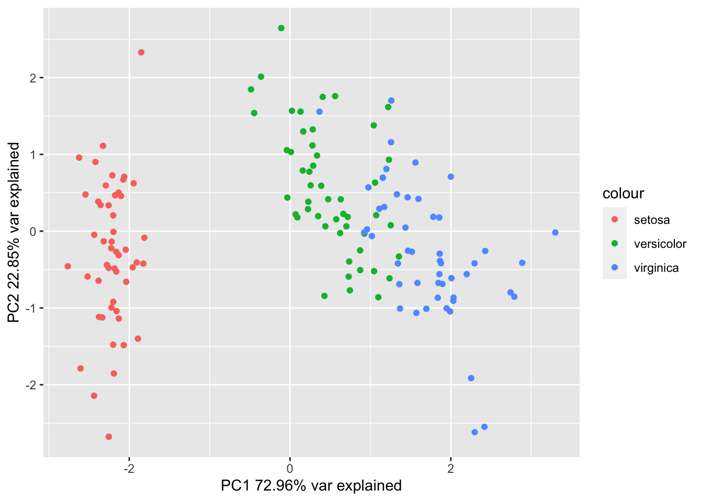
Change the theme and other:
p2 <- p2 + scale_colour_manual(values = colour_vec, name = "Iris species",
labels = c("Setosa", "Versicolor", "Virginica")) +
coord_fixed() +
theme(panel.background = element_blank(),
legend.background = element_rect(colour = "black"),
legend.position = c(1, 1),
legend.justification = c("right", "top"),
axis.line = element_line(),
axis.ticks = element_line(colour = "black"),
axis.text = element_text(colour = "black", size = 9),
axis.title = element_text(colour = "black", size = 12))
p2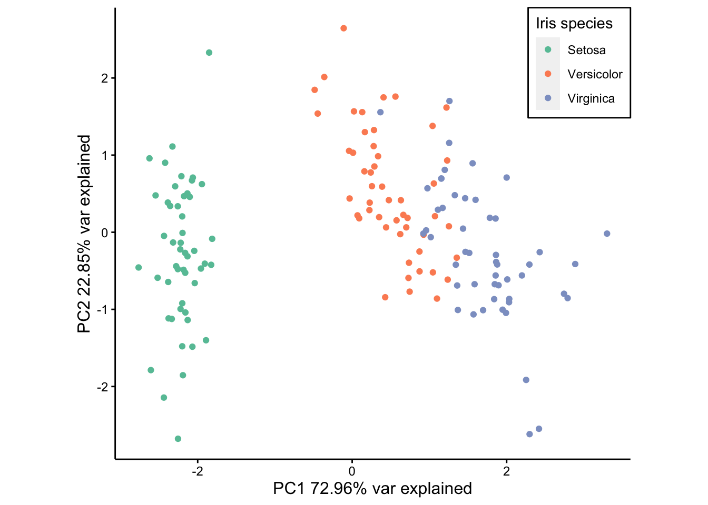
I will plot the distribution of Sepal.Length across the different species:
set.seed(12345)
p3 <- ggplot(data = iris) +
geom_boxplot(mapping = aes(x = Species, y = Sepal.Length, fill = Species),
outlier.colour = NA, notch = TRUE) +
geom_jitter(aes(x = Species, y = Sepal.Length), width = 0.1, alpha = 0.7) +
scale_fill_manual(values = colour_vec, name = "Iris species",
labels = c("Setosa", "Versicolor", "Virginica")) +
scale_x_discrete(breaks = c("setosa", "versicolor", "virginica"),
labels = c("Setosa", "Versicolor", "Virginica")) +
xlab("") +
ylab("Sepal Length") +
theme(panel.background = element_blank(),
legend.background = element_rect(colour = "black"),
legend.position = c(0.05, 0.95),
legend.justification = c("left", "top"),
axis.line = element_line(),
axis.ticks = element_line(colour = "black"),
axis.text.y = element_text(colour = "black", size = 9),
axis.text.x = element_text(colour = "black", size = 12),
axis.title = element_text(colour = "black", size = 12))
p3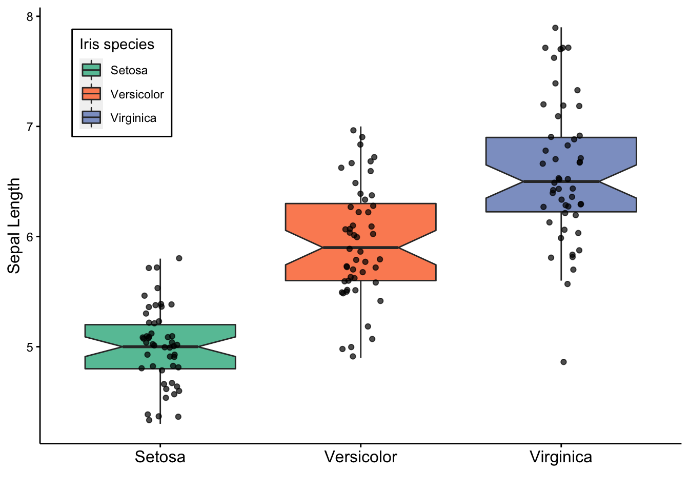
Caclulate the mean, sd, se and ci of the 4 different features per species:
library(tidyverse)── Attaching packages ──────────────────────────────────────────────────────────────────────────────────────────────────────── tidyverse 1.3.0 ──✓ tibble 3.0.1 ✓ dplyr 0.8.5
✓ tidyr 1.0.2 ✓ stringr 1.4.0
✓ readr 1.3.1 ✓ forcats 0.5.0
✓ purrr 0.3.4 ── Conflicts ─────────────────────────────────────────────────────────────────────────────────────────────────────────── tidyverse_conflicts() ──
x dplyr::filter() masks stats::filter()
x dplyr::lag() masks stats::lag()cur_dat <- iris %>%
pivot_longer(cols = colnames(iris)[1:4]) %>%
group_by(Species, name) %>%
summarise(mean_val = mean(value),
sd_val = sd(value),
n_val = length(value),
se_val = sd_val / sqrt(n_val),
ci_t = qt(0.975, df = n_val - 1) * se_val)
cur_dat# A tibble: 12 x 7
# Groups: Species [3]
Species name mean_val sd_val n_val se_val ci_t
<fct> <chr> <dbl> <dbl> <int> <dbl> <dbl>
1 setosa Petal.Length 1.46 0.174 50 0.0246 0.0494
2 setosa Petal.Width 0.246 0.105 50 0.0149 0.0300
3 setosa Sepal.Length 5.01 0.352 50 0.0498 0.100
4 setosa Sepal.Width 3.43 0.379 50 0.0536 0.108
5 versicolor Petal.Length 4.26 0.470 50 0.0665 0.134
6 versicolor Petal.Width 1.33 0.198 50 0.0280 0.0562
7 versicolor Sepal.Length 5.94 0.516 50 0.0730 0.147
8 versicolor Sepal.Width 2.77 0.314 50 0.0444 0.0892
9 virginica Petal.Length 5.55 0.552 50 0.0780 0.157
10 virginica Petal.Width 2.03 0.275 50 0.0388 0.0781
11 virginica Sepal.Length 6.59 0.636 50 0.0899 0.181
12 virginica Sepal.Width 2.97 0.322 50 0.0456 0.0917Display this in barplot:
cur_dat$Measurement <- factor(cur_dat$name, levels = c("Petal.Width", "Petal.Length", "Sepal.Width", "Sepal.Length"))
p4 <- ggplot(cur_dat, mapping = aes(x = Species, y = mean_val, fill = Measurement)) +
geom_bar(stat = "identity", position = position_dodge()) +
geom_errorbar(aes(ymin = mean_val - ci_t, ymax = mean_val + ci_t),
position = position_dodge(width = 0.9), width = 0.2) +
scale_fill_brewer(palette = "Paired",
labels = c("Petal Width", "Petal Length", "Sepal Width", "Sepal Length")) +
labs(x = "", y = "Measured value [cm]") +
scale_x_discrete(breaks = c("setosa", "versicolor", "virginica"),
labels = c("Setosa", "Versicolor", "Virginica")) +
theme(panel.background = element_blank(),
legend.background = element_rect(colour = "black"),
legend.position = c(0.05, 0.95),
legend.justification = c("left", "top"),
axis.line = element_line(),
axis.ticks = element_line(colour = "black"),
axis.text.y = element_text(colour = "black", size = 9),
axis.text.x = element_text(colour = "black", size = 12, angle = 45, hjust = 1),
axis.title = element_text(colour = "black", size = 12))
p4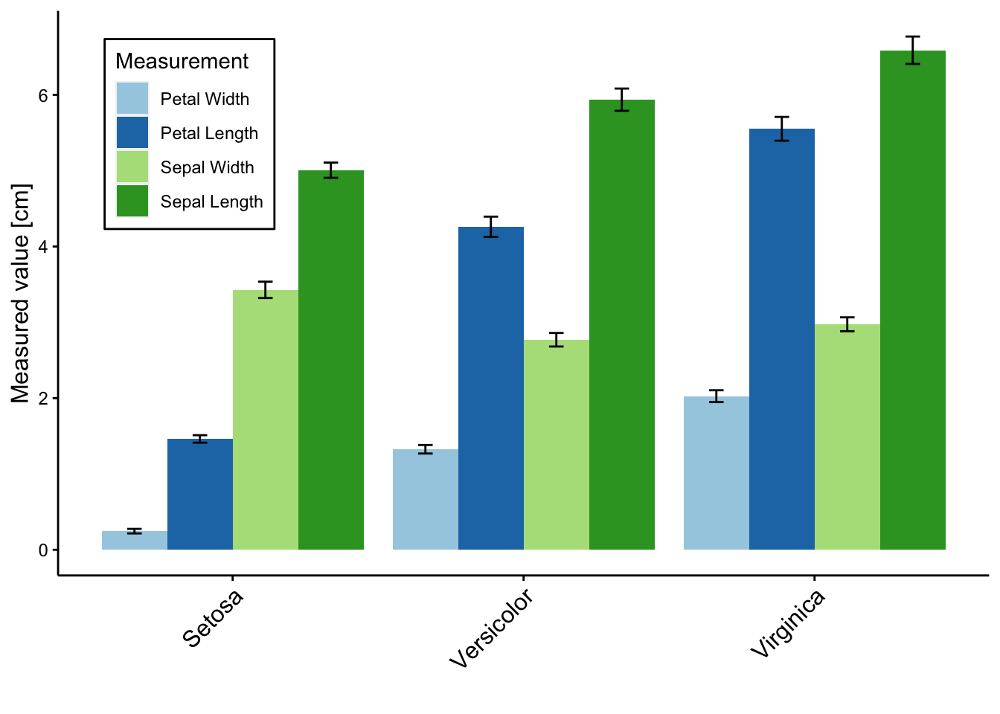
rows: all features, col: all samples
library(pheatmap)
cur_dat <- t(iris[1:4])
colnames(cur_dat) <- rownames(iris)
p5 <- pheatmap(cur_dat, scale = "row", color = colorRampPalette(c("dark blue", "white", "dark red"))(100),
annotation_col = data.frame(row.names = colnames(cur_dat),
Species = iris$Species),
annotation_colors = list(Species = colour_vec),
show_colnames = FALSE,
labels_row = sub("\\.", " ", rownames(cur_dat)))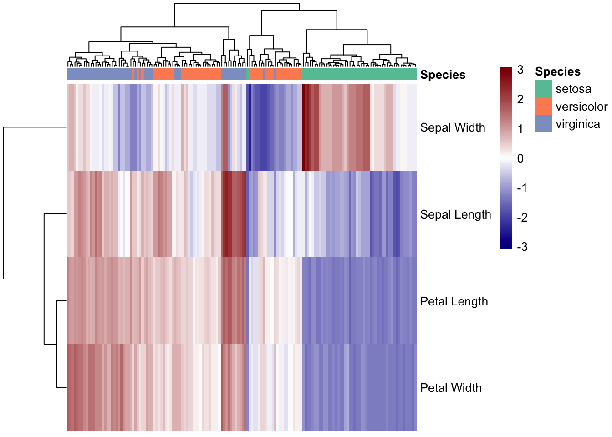
library(cowplot)
********************************************************Note: As of version 1.0.0, cowplot does not change the default ggplot2 theme anymore. To recover the previous behavior, execute:
theme_set(theme_cowplot())********************************************************upper_row <- p1
middle_row <- plot_grid(p2 + theme(legend.title = element_text(size = 10),
legend.text = element_text(size = 8),
legend.key.size = unit(0.1, "cm"),
legend.position = c(1, 1.3)),
p3 + theme(legend.title = element_text(size = 10),
legend.text = element_text(size = 8),
legend.key.width = unit(0.3, "cm")),
p4 + theme(legend.title = element_text(size = 8),
legend.text = element_text(size = 6),
legend.position = c(0.05, 1.1),
legend.key.size = unit(0.3, "cm")),
ncol = 3, labels = c("B", "C", "D"))
lower_row <- p5$gtable
final_figure <- plot_grid(upper_row, middle_row, lower_row, labels = c("A", "", "E"), nrow = 3)
ggsave(filename = "docs/final_figures/Fig_1.pdf", plot = final_figure, width = 210, height = 290, units = "mm")
sessionInfo()R version 4.0.0 (2020-04-24)
Platform: x86_64-apple-darwin17.0 (64-bit)
Running under: macOS Catalina 10.15.4
Matrix products: default
BLAS: /Library/Frameworks/R.framework/Versions/4.0/Resources/lib/libRblas.dylib
LAPACK: /Library/Frameworks/R.framework/Versions/4.0/Resources/lib/libRlapack.dylib
locale:
[1] en_US.UTF-8/en_US.UTF-8/en_US.UTF-8/C/en_US.UTF-8/en_US.UTF-8
attached base packages:
[1] stats graphics grDevices utils datasets methods base
other attached packages:
[1] cowplot_1.0.0 pheatmap_1.0.12 forcats_0.5.0 stringr_1.4.0
[5] dplyr_0.8.5 purrr_0.3.4 readr_1.3.1 tidyr_1.0.2
[9] tibble_3.0.1 tidyverse_1.3.0 RColorBrewer_1.1-2 ggsci_2.9
[13] ggplot2_3.3.0 workflowr_1.6.2
loaded via a namespace (and not attached):
[1] Rcpp_1.0.4.6 lubridate_1.7.8 lattice_0.20-41 assertthat_0.2.1
[5] rprojroot_1.3-2 digest_0.6.25 utf8_1.1.4 R6_2.4.1
[9] cellranger_1.1.0 backports_1.1.6 reprex_0.3.0 evaluate_0.14
[13] httr_1.4.1 pillar_1.4.4 rlang_0.4.6 readxl_1.3.1
[17] rstudioapi_0.11 Matrix_1.2-18 rmarkdown_2.1 labeling_0.3
[21] splines_4.0.0 munsell_0.5.0 broom_0.5.6 compiler_4.0.0
[25] httpuv_1.5.2 modelr_0.1.7 xfun_0.13 pkgconfig_2.0.3
[29] mgcv_1.8-31 htmltools_0.4.0 tidyselect_1.0.0 fansi_0.4.1
[33] crayon_1.3.4 dbplyr_1.4.3 withr_2.2.0 later_1.0.0
[37] grid_4.0.0 nlme_3.1-147 jsonlite_1.6.1 gtable_0.3.0
[41] lifecycle_0.2.0 DBI_1.1.0 git2r_0.27.1 magrittr_1.5
[45] scales_1.1.0 cli_2.0.2 stringi_1.4.6 farver_2.0.3
[49] fs_1.4.1 promises_1.1.0 xml2_1.3.2 ellipsis_0.3.0
[53] generics_0.0.2 vctrs_0.2.4 tools_4.0.0 glue_1.4.0
[57] hms_0.5.3 yaml_2.2.1 colorspace_1.4-1 rvest_0.3.5
[61] knitr_1.28 haven_2.2.0